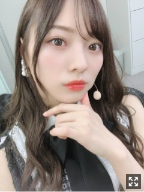
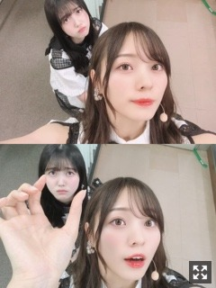

一点を見つめるんです、気持ちを休める瞬間が大事なのです

久しぶりになってしまいました〜
気づけばもう１２月、、
凍える寒さですね、私はとても嬉しいです
ずっと冬でもいい☀︎
それくらいに冬がすき
あっという間に年末モード。
全ツが終わってから特に時間の流れが物凄く早く感じます、、
来年まできっと一瞬なんだろうなあ。寂しい
さて、
お越しくださった皆様、
本当にありがとうございました！
大きなステージ。２日間。
ステージに立つまでは不安だったものも
気づけば消えていました。
たくさんの笑顔が見られて幸せでした☀︎
改めて感じた責任感、先輩方の偉大さ。
学んだことだらけでした。
この機会を頂けたこと、本当に有難く思います。
一人一人が悩み考え自主的に行動し
自分自身への課題と向き合えた大切な期間だったと思います。
プレッシャーに追われながらもみんなで乗り越え試行錯誤し、どこか強くなれた気がします
中々リハーサルに参加出来ない日が続き、
そんな中でたくさんの方に助けて頂きました。
なによりも、
同期のみんなが率先して意見を出し合い
良いものにしようと頑張る姿は
私の心を動かす一番の支えでした。
４期生のみんながいたからこそ感じられたものです。
本当に感謝でいっぱいです！
４期生の姿には心動かされるものがありました。
フルサイズで楽曲を披露したい、と
話し合いの中で提案したのです、☀︎
そして「三番目の風」「4番目の光」を
フルサイズで披露させて頂きました！
３期生にとっても４期生にとっても
大切な楽曲。嬉しかった〜！！
この楽曲のパフォーマンス中、
いつもかっこよく可愛くキラキラしてるのに
ステージ上で見るみんなの後ろ姿は
いつにも増してとても強く、頼もしかったです。
私の携帯で誰とも写真撮ってないのです、、
携帯触る時間も無いほどバタバタしておりましたみんなのカメラに映ってるかと思います( .. )
どんどん駆け寄って来てくれる同期に
愛で溢れました。
感情が伝染していく瞬間。連鎖していく瞬間。
愛おしすぎました。( .. )
守りたいと思える存在です。
私の力じゃどうにもならないかもしれないけど
そう思える存在がいるって物凄く大きいです。
みんなが幸せになってほしいです。
ずっと、そう願います︎︎︎︎✌︎
４年目にして初めて感じた感情、
たくさんありました。
まだまだ経験したいこと、できること、
やりたいこと、山積みなんだなあと
感じられる期間でもありました
本当に、最高に楽しかったです！
自分の中ではたくさん反省もありますが、
反省も緊張も全部含めて最高の２日間でした！
たくさんの応援、
ありがとうございました！
今週末は握手会です〜！
２日連続！全握個握！
楽しみです〜
個握はクリスマスが近いので
何かしらしようかと思っております〜
私服はどんなの着ようかしら。
あんまりカジュアルぽい服着ないけど
パーカーを買ったので着ました︎︎︎︎✌︎
撮影の日は楽ちんな格好が多い。
パンツよりスカートが多い最近。
形や色やデザインがドンピシャの
デニムを探し中です〜

くぼ〜
気づくと近くにいることが多い。
可愛いです
内容少なくてごめんなさい(；；)
さあ、
皆様週末にお会いしましょう
おやすみ
来年の目標がいくつかできました。
もう２１歳がそこまで迫ってきている。
自分を解放できる場所が多く作れたらなあ、と思います︎︎︎︎✌︎
Original：https://www.nogizaka46.com/s/n46/diary/detail/53935?ima=4941&cd=MEMBER